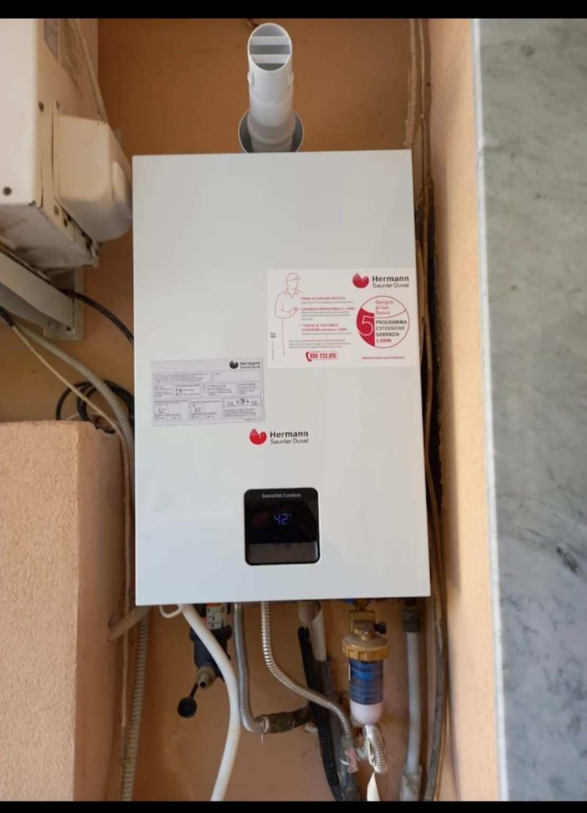
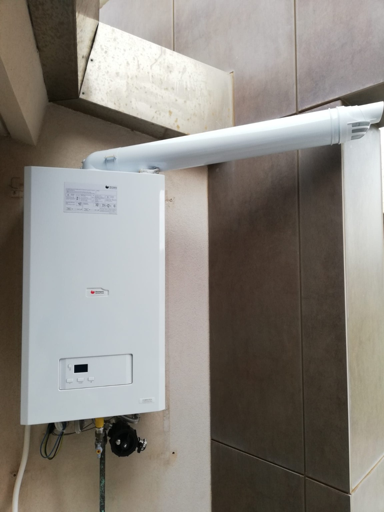
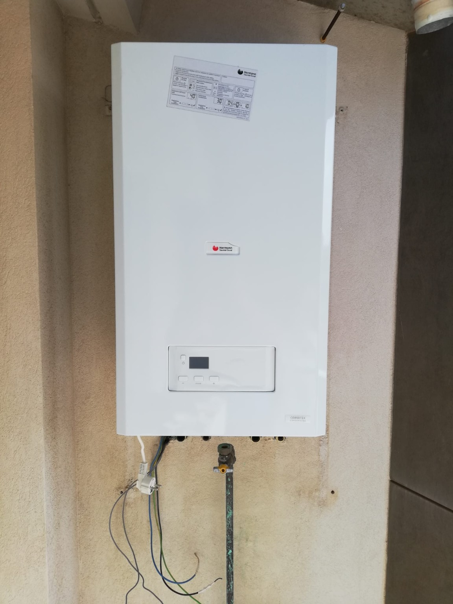
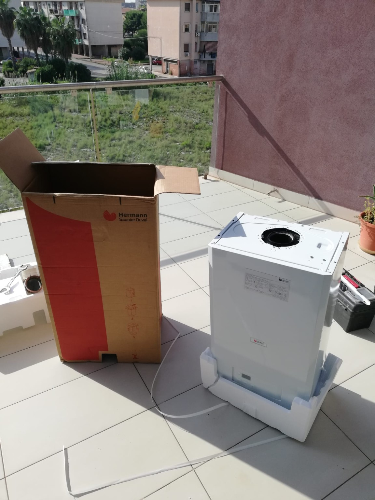

Installazione
Caldaie a condensazione e scaldabagni.
GIANLUCA LATINA • SIRACUSA
Installazione, sostituzione e manutenzione di caldaie e scaldabagni, con collegamenti termoidraulici e soluzioni per riscaldamento e acqua calda sanitaria.
IL SERVIZIO
Caldaie a condensazione e scaldabagni.
Valutazione dell’apparecchio e dei collegamenti esistenti.
Collegamenti e interventi sull’impianto.
INTERVENTI PRINCIPALI
CALDAIE E TERMOIDRAULICA
Scorri alcuni lavori reali su caldaie, scaldabagni e impianti termoidraulici.






PARLIAMO DEL TUO PROGETTO
Invia una foto dell’installazione attuale, se presente, e indica la zona. Sarà più semplice valutare apparecchio, collegamenti e preventivo.